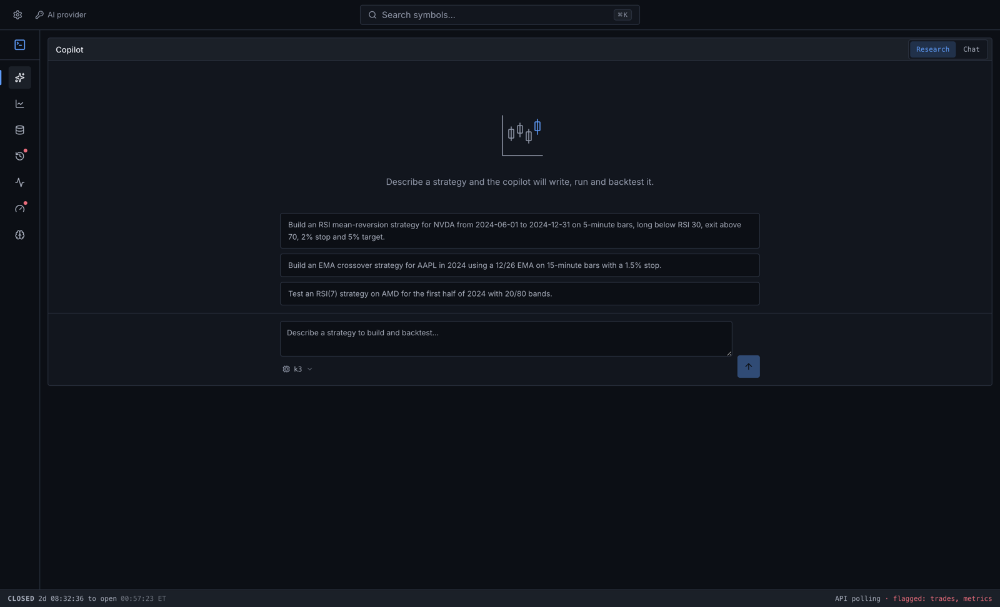

Describe a strategy in plain English. Ananke writes the code, runs it on real market data, tests it on data it never saw, and tells you what worked, what didn't, and why.
Free · Apple Silicon & Intel · Bring your own AI model

The copilot orchestrates real tools: your market data, a Python research SDK, and a backtesting engine. It doesn't make up numbers. Every result links back to the code and data that produced it.
Your idea becomes a structured, validated research spec.
Coverage and gaps are checked before any code runs.
Strategy code is generated and run in a Python environment.
Backtests on a development window and an untouched holdout.
Findings are computed by code; the AI only explains them.
Most strategy tools show you a rising equity curve. Ananke shows you whether the edge survives data it was never tuned on.
Pick a provider in Settings, paste an API key, and choose a model. Switch any time from the Copilot. Run a local model if you'd rather nothing leaves your Mac.
Multi-pane charts with indicators, session bands and trade replay, built for long research sessions.
Minute bars stored in your own time-series database, with coverage checks and gap backfill.
Every strategy is plain Python on the Ananke SDK. Open it in JupyterLab and keep going by hand.
One universal app for Apple Silicon and Intel Macs.
v0.1.0 · macOS 11 Big Sur or later · Early preview